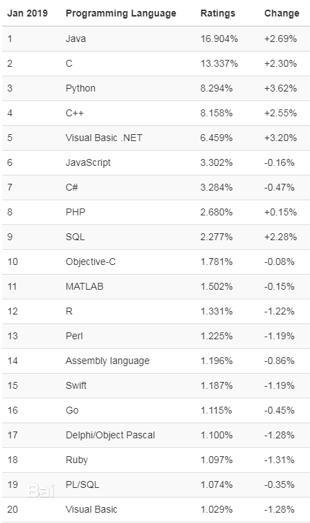

C语言的主要用途以及未来发展
截止到 2021 年，C语言已经发布了将近 50 年，是不折不扣的“大叔”或者“大爷”，但是，C语言在编程界依然非常流行；2019 年，C语言由于速度快、平台独立的特性，在世界编程语言排行榜中夺得第二名。
C语言是为直接控制硬件而开发的，可以用来编写操作系统内核、驱动程序等。
C语言也是很多其它编程语言的基石，它们有的使用C语言开发编译器和标准库，有的基于C语言模块进行扩展，因此，C语言也被称为其它语言的“母语”。
现在都 2021 年了，您可能会想，C语言在现实生活中还有什么用途呢？这就是本文要重点讨论的内容。
本文我们先讨论C语言的特性，然后讨论C语言在目前以及未来的实际用途。通过阅读本文，您将对C语言有一个整体的认知。
图2：C语言之父——丹尼斯·里奇
从特性方面讲，C语言是一种中级语言，它结合了低级语言速度快的特点，以及高级语言开发方便的特点；从应用方面讲，C语言也是一种高级语言，它可以用来编写电脑软件，或者开发嵌入式系统。
当需要开发一种新的编程语言时，C语言是最好的选择，因为C语言执行效率非常高，仅次于汇编语言。例如，目前常用的 Python、PHP、C++、Objective-C 都是在C语言的基础上进行开发的。
C语言的主要特点：
C语言的用途可以概括如下：
C语言可以提高绘图性能，例如，作为一款 FPS 恐怖游戏，Doom3 在 2004 年就是用C语言进行开发，并运行在 Windows 系统。
C语言失败的一个主要原因是 C++的诞生。C++ 在C语言的基础上进行了扩展，不但保留了几乎所有的C语言特性，还包含了面向对象编程和模板编程等新的思想。对于用户使用的应用程序，人们更喜欢使用 C++，它的开发效率更高，使用更方便。
但是，C++ 程序占用内存较多，尤其是在使用 C++ 标准模板库时，内存更是疯长，对于资源有限的嵌入式系统，或者在意资源消耗的系统组件来说，内存疯长是不能承受的，所以C语言仍然是嵌入式系统开发、驱动开发、算法开发的更可靠的选择。
总之，在应用层开发中，C语言已经被 Java、Python、PHP 等现代语言取代了，C语言几乎没有了用武之地。但是，在嵌入式系统开发、驱动开发、底层组件开发、算法开发方面，C语言仍然是不可被替代的。
C语言在可见的未来虽然不会有蓬勃的发展，但是它也不会消失，它仍然有用武之地，在某些领域仍然是不可或缺的。C语言没有未来，但是仍不可被取代。
而我执着地认为应该先学习C语言，再学习 C++，对初学者大谈各种思想的，都是在误导别人。刚入门的程序员才谈这思想那思想，真正的程序员心中没有思想，就是实用主义，能达到目的就行，管他什么思想呢。

图1：2019年世界编程语言排行榜
图1：2019年世界编程语言排行榜
C语言是为直接控制硬件而开发的，可以用来编写操作系统内核、驱动程序等。
C语言也是很多其它编程语言的基石，它们有的使用C语言开发编译器和标准库，有的基于C语言模块进行扩展，因此，C语言也被称为其它语言的“母语”。
现在都 2021 年了，您可能会想，C语言在现实生活中还有什么用途呢？这就是本文要重点讨论的内容。
本文我们先讨论C语言的特性，然后讨论C语言在目前以及未来的实际用途。通过阅读本文，您将对C语言有一个整体的认知。
什么是C语言？
1972 年，丹尼斯·里奇（Dennis Ritchie）在著名的贝尔实验室中开发了C语言。图2：C语言之父——丹尼斯·里奇
从特性方面讲，C语言是一种中级语言，它结合了低级语言速度快的特点，以及高级语言开发方便的特点；从应用方面讲，C语言也是一种高级语言，它可以用来编写电脑软件，或者开发嵌入式系统。
当需要开发一种新的编程语言时，C语言是最好的选择，因为C语言执行效率非常高，仅次于汇编语言。例如，目前常用的 Python、PHP、C++、Objective-C 都是在C语言的基础上进行开发的。
C语言的主要特点：
- 执行速度快
- 可以直接访问内存
- 模块化，易于扩展
- 占用内存少
- 静态类型
- 中级语言
- 可移植性
- 通用语言
C语言的用途
C语言是一种非常简单的编程语言，全世界的程序员都在使用它。最初，C语言被用于系统性开发工作，准确地说，就是编写操作系统（例如 Windows、Linux 等）和底层组件（比如驱动、网络协议等），因为C语言的优势就是执行效率高，C语言生成的程序几乎和汇编语言生成的程序一样快速。C语言的用途可以概括如下：
1) 系统编程
C语言可移植性好，性能高，能够直接访问硬件地址，而且到达某个地址的时间非常短，这使得C语言天生适合开发操作系统或者嵌入式应用程序。在最初的时候，C语言主要就是被应用在这两个领域。2) 开发其它编程语言
有些编程语言的编译器或者解释器就使用C语言开发，还有一些编程语言的库或者模块支持C语言，这使得C语言成为了很多其它编程语言的基础。3) 电气工程
C语言在电气工程领域也有很多用途，它可以使用信号处理算法来管理微处理器、微控制器等集成电路。4) 编译器中间件
由于C语言具有可移植性，适应性强，有时也被用作不同编程语言的中间语言，这样不同编程语言之间就可以共享组件/模块。把C语言作为中间件的编译器有 Gambit、BitC、Glasgow Haskell Compiler、Vala 和 Squeak 等。5) 应用程序
C语言被广泛应用于实现最终的用户应用程序，或者作为某些应用程序的关键模块。例如，机械设计领域的各种 CAM 和 CAD 都在使用C语言编写某些关键模块，这些模块对执行效率有着较高要求。举例说明C语言的应用
在日常生活中，很多系统软件和桌面应用程序都采用C语言进行开发，下面给出了一些示例。1) 操作系统
UNIX 是第一个使用高级语言设计的操作系统，它使用的编程语言就是C语言。后来，Microsoft Windows 和不同的 Android 组件也使用C语言编写。2) GUI（图形用户界面）
Adobe Photoshop 是目前最受欢迎的图像编辑器之一，它的很多组件就使用C语言开发。此外，Illustrator 和 Adobe Premiere 也使用了C语言。3) 嵌入式系统
C语言是开发嵌入式系统应用程序和驱动程序的最佳选择，因为它能够直接操作机器硬件。4) Google
Google Chrome 浏览器和 Google 文件系统都使用了C语言进行开发。此外，谷歌开源社区有大量的项目也都在使用 C/C++。5) 编译器开发
C语言的常见用途之一就是开发其它编程语言的编译器，因为C语言具有低级语言的特性，可以直接访问机器硬件。使用C语言开发的编译器有 Clang C、Bloodshed Dev-C、Apple C 和 MINGW 等。6) 游戏和动画
C语言是编译型语言，比 Java 或者 Python 等非编译型语言执行速度更快，这使得C语言在游戏开发领域不可或缺。C语言可以提高绘图性能，例如，作为一款 FPS 恐怖游戏，Doom3 在 2004 年就是用C语言进行开发，并运行在 Windows 系统。
7) 数据库
MySQL 是目前使用最广泛的数据库之一，它就使用 C/C++ 开发。C语言的未来
在编程语言流行程度方面，Java、Python、C++ 等现代编程语言已经取代了C语言的地位；但是C语言已经存在了很长时间，并且到目前仍然被大量使用。C语言失败的一个主要原因是 C++的诞生。C++ 在C语言的基础上进行了扩展，不但保留了几乎所有的C语言特性，还包含了面向对象编程和模板编程等新的思想。对于用户使用的应用程序，人们更喜欢使用 C++，它的开发效率更高，使用更方便。
但是，C++ 程序占用内存较多，尤其是在使用 C++ 标准模板库时，内存更是疯长，对于资源有限的嵌入式系统，或者在意资源消耗的系统组件来说，内存疯长是不能承受的，所以C语言仍然是嵌入式系统开发、驱动开发、算法开发的更可靠的选择。
总之，在应用层开发中，C语言已经被 Java、Python、PHP 等现代语言取代了，C语言几乎没有了用武之地。但是，在嵌入式系统开发、驱动开发、底层组件开发、算法开发方面，C语言仍然是不可被替代的。
C语言在可见的未来虽然不会有蓬勃的发展，但是它也不会消失，它仍然有用武之地，在某些领域仍然是不可或缺的。C语言没有未来，但是仍不可被取代。
常见问题
1) 学习 C++ 之前要学习C语言吗？
网上有人建议直接学习 C++，这样能够直接接受面向编程的思想，而不用经历面向过程编程的阶段，能够更好地培养初学者的编程思维。而我执着地认为应该先学习C语言，再学习 C++，对初学者大谈各种思想的，都是在误导别人。刚入门的程序员才谈这思想那思想，真正的程序员心中没有思想，就是实用主义，能达到目的就行，管他什么思想呢。
2) 2021 年还在使用C语言吗？
答案是肯定的。C语言和 C++ 在 2021 年仍然在被大量使用，而且位于世界编程语言的前 5 名。学好C语言，能大幅提升编程功力，不懂C语言的程序员一般造诣不高。3) 为什么C语言仍然在被使用？
因为C语言在某些领域不可被替代。C语言有自身的优势，比如执行效率高、占用内存少、能够直接访问硬件，这些优势是 Java、Python、JavaScript 等高级语言都不具备的，所以在某些关注执行效率和资源消耗的项目中，C语言几乎是唯一的选择。关注公众号「站长严长生」，在手机上阅读所有教程，随时随地都能学习。内含一款搜索神器，免费下载全网书籍和视频。

微信扫码关注公众号